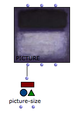

Picture Box
 | The
picture
class can be found in the packahges/menus The box has three inputs/outputs :
|
Initializing the Picture Box
If a picture box is evaluated (and unlocked ) a picture chooser window opens, so that the picture box can be initialized.
To select the picture, follow the procedure described in the Resources section :
Choose a picture in one of the Resources frames.
Pictures can possibly be added or deleted via the
+and-buttons of the User Resources frame.Choose
Cancelto cancel your choice orOKto validate your choice.
Lock the box in order to preserve the chosen picture and prevent rinitialization at the next evaluation.
Select the box and press |  |
The picture can also be loaded and changed from the Picture Editor.
Picture Programming
The picture can also be initialized from a visual program using the background input.
Connect :
Note : the picture will then be dependent on the corresponding file (only the file pathname is "stored" in the picture object). Use the previous precdeure in order to "internalize" the picture into your current OM workspace. |  |
The list must be of dimension h (for height - number of lines) and each sublist must be of the same size (w - width or number of columns / pixel in each line). Each item in this list of lists is the color value of a pixel. It can be expressed as a number between 0.0 and 1.0 for a gray-level picture, or as a list (R G B A) for the level of red, green and blue. "A" stands for "alpha" and represents the transparency of the pixel. |  |
Use get-RGB to get the RGB array from a picture box, be it generated from such an array or from a picture file. This data can be modified and used to initialize new pictures. |
The large amount of data in standard sized picture may lead to long processing time of the RGB array.
Pictures generated from a pixel array also have this array stored in the patch which may lead to long saving time and large file sizes. Consider reinitializing the picture box contents before saving (SHIFT + I) when the content has not necessarily to be saved or can be regenerated at the next session.
Use picture-size to get the size (width height) of a picture in the picture object. |  |
Graphics
The third input of the picture box ( graphics ) is a list of vectorial graphics displayed on top of the picture.
There exist several types of such graphics : lines, arrrows rectangles, circles, text, etc.
They can be created in an OM patch as instances of the graphic-object class, or (more easily) from the picture editor. They can also be connected and transferred from one picture box to another.
The graphic-object box contains information about a graphics to include in the figure (shape, color, style, size, etc.) The points depend on the shape (here, for a circle, they represent the center and dimension). They are always given as values between 0.0 and 1.0, which are scaled depending on the real picture size. |
Note that a picture object can contain only graphics and no background.
Create Patch Background Pictures
To turn a picture box into the background picture of a patch
Ctrl / right click on the picture box and choose Set as Background Picture in the contextual menu.
The background picture fits the current size of the box.

Using the graphics of a picture box as a background picture is very convenient to document or augment your patches with additional information – arrows, rectangles, etc.

Conversely, in order to turn a patch background pictures into a picture box :
This is a convenient way to modify and resize a picture. |  |
Saving / Exporting Pictures
The SAVE-PICTURE function allows to export the picture object including its vector graphics as a picture file. Vector graphics, therefore, are not vectorial anymore and are included in the pixel array of teh exported picture. |  |
The File / Save Picture menu in the picture editor also allows to export the current picture.